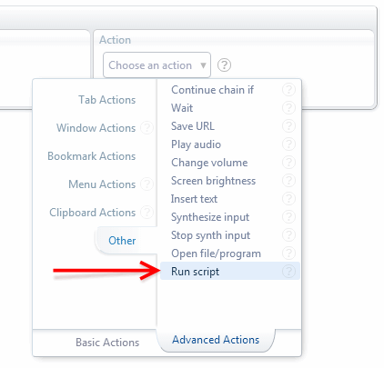

Scripting API

AutoControl provides the Run script advanced action which lets you write your own scripts in
Javascript in order to carry out all sorts of tasks, such as:
Performing operations on your open tabs (open, close, pin, mute, minimize, etc.).
Injecting Javascript and CSS into one or more web pages.
Reading and writing files to your hard drive.
Reading and writing data to the clipboard in various formats.
Running external programs and commands.
And much more...
Here is an example showing the power of AutoControl's scripting API.
let [[, dataUri]] = await ACtl.captureTab('#currentTab') ;
await ACtl.setClipboard({image: dataUri}) ;
let [tabId] = await ACtl.openURL('http://snag.gy', {rightOf: '#currentTab'}) ;
await ACtl.on('tabLoadEnd', tabId) ;
await ACtl.setTabState(tabId, 'active focused') ;
await ACtl.execAction('#clpbrdPaste') ;
await ACtl.saveURL(dataUri, '<desktop>/tab-capture.png') ;
The entire API resides under the ACtl special object. This is a private object that only the script has access to.
Scripts run in a fully isolated context to ensure the security and reliabiliy of your code.
Read more at Script Isolation to learn how this isolation is enforced
and the ways you can bypass it at your own discretion.
Also, notice the use of the await keyword before every ACtl function.
This is because those functions are asynchronous, i.e. they return promises.
Go to Handling Asynchronicity to learn how to deal with this comfortably in your scripts.
Finally, and very importantly, the lifetime of a script is tied to the lifetime of the page it's running in.
Once a tab is closed, reloaded or navigated away, the page in that tab disappears including all scripts running in it.
So, don't forget: Scripts run in pages, not tabs.
AutoControl lets you choose one or more "tabs" to run a script in, but this is an abuse of language.
It's implied that a script will run in the page currently loaded in a tab.
In order to run persistent scripts that are independent of the lifetime of any page,
AutoControl supports Background Scripts.
 Forum
Install now from theChrome Web Store
Forum
Install now from theChrome Web Store